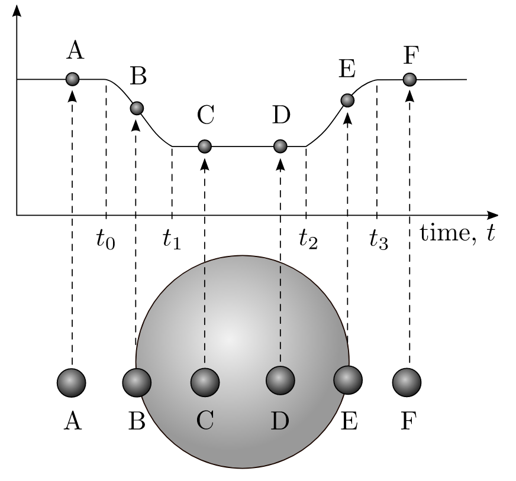

Forrige side🙂 🙁Formørkelser

Vi ser altså at hvis dataene er gode nok til å skjelne punktet fra formørkelsen begynner til formørkelsen er total, så kan vi finne planetens radius ved å lese av tidsperioden t1 − t0 Planeten beveger seg da en strekning 2Rp i løpet av tiden t1 − t0 med hastighet vp, eller er det nå egentlig riktig å bruke hastigheten vp???. Hastigheten vp er i forhold til massesenteret. Det viser seg å være en god tilnærmelse, men kan du se hva vi egentlig skulle brukt?
Trykk her når du har tenkt
Siden vi ser på planetens hastighet i forhold til stjerneskiven (stjerna beveger seg jo også i forhold til massesenteret) så må vi bruke hastigheten v = v* + vp, men siden v* ≪ vp så er det en god tilnærmelse å bruke vp.
Neste side